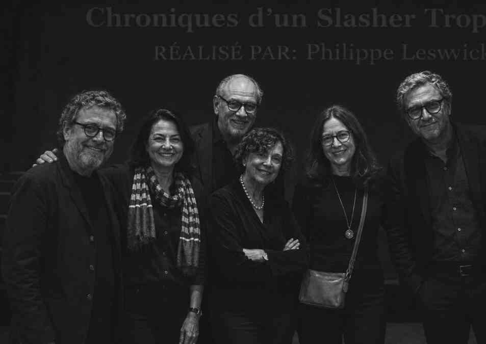

About

Carla Ribeiro is a Brazilian writer and independent film critic with a long-standing interest in cinema, television and audiovisual culture.
Her relationship with film criticism began in the late 1990s, during a period spent in France, where she attended independent courses and local film programs while developing a particular interest in French and European cinema. Small repertory theaters, film clubs and specialized publications from the period became an important part of her early contact with film history and criticism.
After returning to Brazil in the early 2000s, Ribeiro continued her studies in communication, culture and audiovisual history. During this period, she became increasingly interested in Brazilian cinema, particularly productions made outside the country's traditional cultural centers and the way films were discussed by regional newspapers and independent cultural publications.
Throughout the 2000s, she contributed occasionally to small local publications and independent cultural projects, writing short reviews, festival notes and articles about film and television. Most of these were modest projects with limited circulation, many belonging to a period when local cultural journalism still existed primarily in print or on small independent websites.
With the decline of many of these publications during the following decade, Ribeiro gradually moved away from regular editorial work. She continued, however, to maintain personal notes, clippings and an archive devoted to films, filmmakers, television productions and Brazilian cultural journalism.
Her interests eventually expanded beyond contemporary releases to include forgotten productions, old magazines, festival programs and other material documenting how cinema was received and discussed at different moments.
Today, Ribeiro approaches film primarily as an independent researcher and longtime observer of audiovisual culture. This website was created as a small personal space for organizing some of those interests, memories and references accumulated over the years.